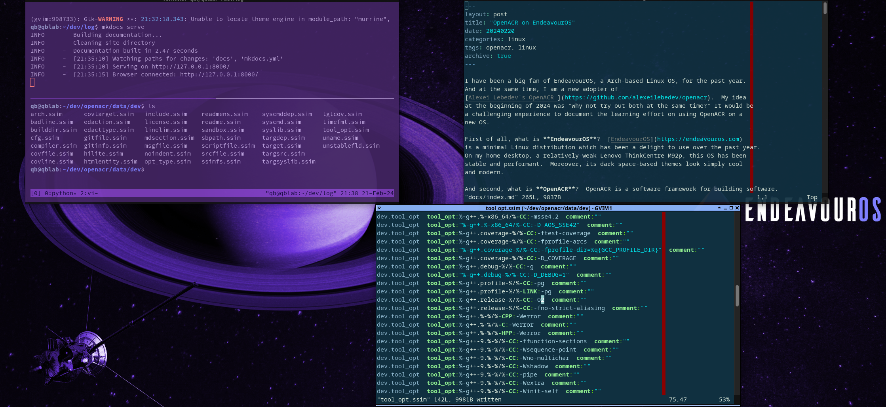
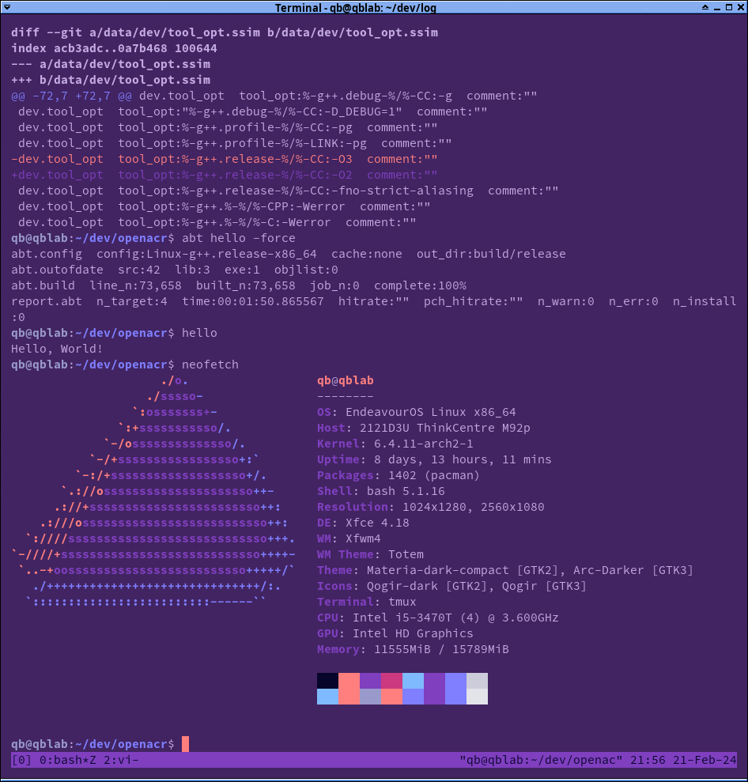
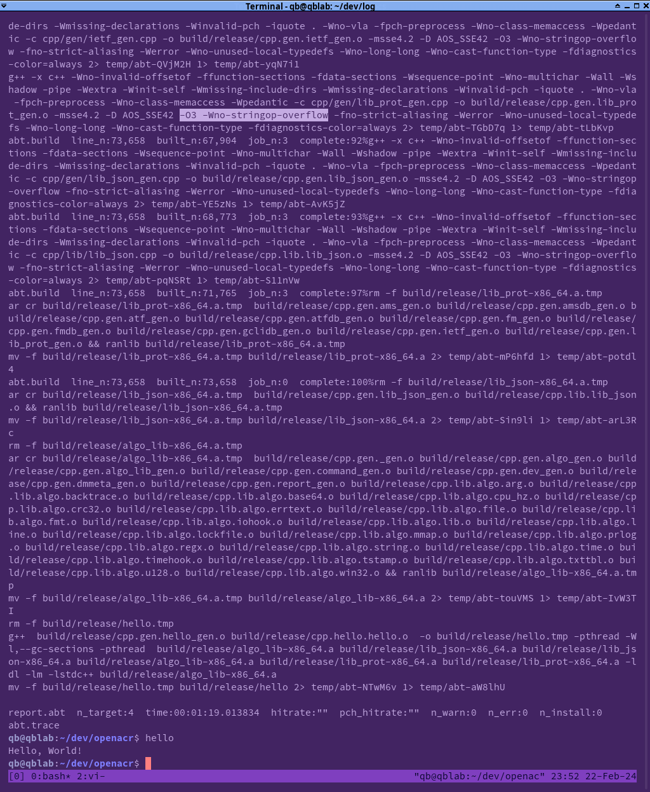

OpenACR on EndeavourOS
I have been a big fan of EndeavourOS, a Arch-based Linux OS, for the past year.
And at the same time, I am a new adopter of
Alexei Lebedev's OpenACR . My idea
at the beginning of 2024 was "why not try out both at the same time?" It would be
a challenging experience to document the learning effort on using OpenACR on a
new OS.
First of all, what is EndeavourOS? EndeavourOS is a minimal Linux distribution which has been a delight to use over the past year. On my home desktop, a relatively weak Lenovo ThinkCentre M92p, this OS has been stable and performant. Moreover, its dark space-based themes look simply cool and modern.

And second, what is OpenACR? OpenACR is a software framework for building software. In other words, it is meta-software, a tool that builds other tools. It relies on a common data dictionary to store a program's data structures and generates the necessary code for managing their memory allocations, deallocations, lookups, and updates. In brief, OpenACR is a code generator which generates code from application metadata.
OpenACR style
While the use of code generation is not new, there are pros and cons with OpenACR's approach. The pros with code generation is that 1) common bugs with handling memory are mostly avoided, 2) the code is extremely type-safe, and 3) most everyone can read each other's code. One con with OpenACR is the effort it takes for a C++ developer to get used to reading ACR's generated code. A C++ developer usually expects to see a class wrapped around 1) some data and 2) functions that handle that data. With generated OpenACR code, this idea is instead reversed.
A picture is worth a thousand words- so here is a concrete example.
Let's say we have two data structures each with its own sort operation.
In C++, we'd see something like this:
class A {
int a[10];
public:
void sort();
};
class B {
double b[10];
public:
void sort();
};
With OpenACR, the generated code would look something like this:
struct A {
int a[10];
};
struct B {
double b[10];
};
void A_sort(A &a);
void B_sort(B &b);
To use OpenACR, a developer avoids thinking about classes and member functions and rather, thinks about generated functions that operates on data structures. It's reversed. This may take some time to digest and wrap your head around. But this style works and this is its own style of programming.
Step 1
The first step to building OpenACR is to get the code and build. On any Linux box, it would be as easy as:
git clone https://github.com/alexeilebedev/openacr.git
cd openacr
ai
Pre-requisites
A quick look at OpenACR's dependencies shows a dependencies on mariadb, ssl, lz4 and cppcheck. In EndeavourOS, these can be installed quickly using yay:
yay mariadb
4 extra/mariadb-clients 11.2.3-1 (1.9 MiB 32.8 MiB)
MariaDB client tools
3 extra/mariadb-libs 11.2.3-1 (5.6 MiB 24.0 MiB) (Installed: 11.1.2-1)
MariaDB libraries
2 extra/percona-server 8.1.0_1-2 (26.7 MiB 187.7 MiB)
Drop-in replacement for MySQL that provides improved performance, diagnostics, instrumentation and MyRocks storage engine
1 extra/mariadb 11.2.3-1 (29.4 MiB 212.8 MiB)
Fast SQL database server, derived from MySQL
==> Packages to install (eg: 1 2 3, 1-3 or ^4)
==> 1,3,4
Sync Explicit (1): mariadb-11.2.3-1
resolving dependencies...
looking for conflicting packages...
extra/mariadb-clients 11.2.3-1 32.79 MiB 1.89 MiB
extra/mariadb-libs 11.1.2-1 11.2.3-1 0.22 MiB 5.60 MiB
extra/mariadb 11.2.3-1 212.76 MiB 29.36 MiB
(install steps continued normally)
yay lz4
core/lz4 1:1.9.4-2 (509.5 KiB 1.8 MiB) (Installed: 1:1.9.4-1)
Extremely fast compression algorithm
==> Packages to install (eg: 1 2 3, 1-3 or ^4)
==> 1
(install steps continued normally)
To be exact, here are my development machine specs:
OS kernel 6.4.11-arch2-1
gcc version 13.2.1 20230801
stringop-overflow
But running the first build of OpenACR on EndeavourOS, the make fails with these errors:
g++ -x c++ -Wno-invalid-offsetof -ffunction-sections -fdata-sections -Wsequence-point -Wno-multichar -Wall -Wshadow -pipe -Wextra -Winit-self -Wmissing-include-dirs -Wmissing-declarations -Winvalid-pch -iquote . -Wno-vla -fpch-preprocess -Wno-class-memaccess -Wpedantic -c cpp/gen/algo_gen.cpp -o build/release/cpp.gen.algo_gen.o -msse4.2 -D AOS_SSE42 -O3 -fno-strict-aliasing -Werror -Wno-unused-local-typedefs -Wno-long-long -Wno-cast-function-type
In function ‘void algo::ch_SetStrptr(LnumStr4_U32&, const strptr&)’,
inlined from ‘bool algo::ch_ReadStrptrMaybe(LnumStr4_U32&, strptr)’ at cpp/gen/algo_gen.cpp:4249:21:
cpp/gen/algo_gen.cpp:4270:22: error: writing 1 byte into a region of size 0 [-Werror=stringop-overflow=]
4270 | parent.ch[j] = rhs_elems[i];
| ~~~~~~~~~~~~~^~~~~~~~~~~~~~
In file included from ./include/algo.h:33,
from cpp/gen/algo_gen.cpp:25:
./include/gen/algo_gen.h: In function ‘bool algo::ch_ReadStrptrMaybe(LnumStr4_U32&, strptr)’:
./include/gen/algo_gen.h:2677:8: note: at offset 4 into destination object ‘algo::LnumStr4_U32::ch’ of size 4
2677 | u8 ch[4];
| ^~
Googling for stringop-overflow errors point to this spurious problem with gcc version 11 and up.
According to a 17 Apr 2020 post by Bruce Richardson at Intel
stringop-overflow warns when it sees a possible overflow in a string operation.
In the rte_memcpy functions different branches are taken depending on the size. stringop-overflow is raised for the branches in the function where it sees the static size of the src could be overflowed.
However, in reality a correct size argument and in some cases dynamic allocation would ensure that this does not happen.
Reading this and other online posts revealed several possible workarounds:
- disable the warning using a compiler option
- use a pragama to disable the warning on specific files
- use clang
- upgrade to the most recent gcc
- lower or disable the compiler optimizations
While I could've tried any or all of these options, I opted to disable the compiler optimizations as a quick fix. This was replacing the -O3 gcc compiler flag in bin/bootstrap/Linux-g++.release-x86-64 to -O2.
Reducing the compiler optimizations removed the stringop-overflow warnings.
Edit A read of the OpenACR readme shows that this compiler issue is a known problem. Perhaps the makefile should thrown up a warning when building with gcc >= version 8 and O3?
Follow-up I took another look at this build problem. The command ai runs the script bin/select-bootstrap to consider the specific build file for the system's architecture and compiler. The problem with this script is that it only considers the compilers clang++ and g++. It does not detect the compiler's version so it never considers running the bootstrap script for gc++ version 9 or higher. This is a script issue that should be fixed.
mariadb/mysql.h
The next compiler error I encountered was this:
In file included from cpp/gen/lib_mysql_gen.cpp:26:
./include/gen/lib_mysql_gen.h:26:10: fatal error: mariadb/mysql.h: No such file or directory
26 | #include <mariadb/mysql.h>
| ^~~~~~~~~~~~~~~~~
This looked odd because I was sure I installed mariadb as part of my pre-requisites check. However I could not find a /usr/include/mariadb/mysql.h on my system. Instead, I found a /usr/include/mysql/mysql.h. It looked like on my system, the mariadb files were installed in a mysql folder rather than to mariadb folder.
I compared the mariadb files as packaged for Debian and as packaged for Arch-Linux.
Mariadb package for Debian shows:
/usr/include/mariadb/mysql.h
Mariadb package for Arch-Linux shows:
usr/include/mysql/mysql.h
Indeed, for Arch-Linux, the mariadb header files are installed under the older mysql folder name. With this confirmed, a quick solution was to make a mariadb softlink to mysql- like this:
cd /usr/include
sudo ln -s mysql mariadb
With this quick hack, the OpenARC ai build completed for the first time.
Hello World
Following tradition, I created a Hello World application as a first trial run of the environment. To do this, I ran the command below to create a default app.
acr_ed -create -target hello
After inspecting the planned updates, I committed the changes into my local data dictionary for real:
acr_ed -create -target hello -write
To build, I kick off a build using OpenACR's built tool- which is appropriately named abt, short for a-build-tool.
abt hello
Running this command ran into the same compiler optimization issue I encountered previously. The abt build command picked out the O3 optmization level for g++ version 8. The compiler options are stored in data/dev/tool_opt.ssim. To fix this, I overrode -O3 with -O2 and recompiled. This worked! The proof is in the screenshot below.

Step 2
no-stringop-overflow
Perhaps we can remove this gcc build problem by removing the stringop-overflow warning. This seems to be a fix suggestion put into gcc10 posted here I am using gcc 13 and I still see the nostring-overflow errors- so I could force the nostring-overflow at compile time.
To disable nostring-overflow, I made these two changes:
- bin/bootstrap/Linux-g++.release-x86_64
- add to g++ command line parameters:
-Wno-stringop-overflow to g++
- add to g++ command line parameters:
- data/dev/tool_opt.ssim
- add the line
dev.tool_opt tool_opt:%-g++.release-%/%-CC:-Wno-stringop-overflow comment:""
- add the line
Then I ran ai -clean and ai -force to rebuild the entire system and then abt hello -clean and abt hello -force to build the hello app. To my surprise, both builds succeeded! And furthermore, the hello app ran without crashing. Amazing.
The proof is in the screenshot. Notice the use of g++ O3 and no-stringop-overflow parameters:

Fix summary
In summary, there are altogether 3 small patches to get OpenACR to work on Arch-Linux.
- bin/bootstrap/Linux-g++.release-x86_64
- add to g++ command line parameters:
-Wno-stringop-overflow to g++
- add to g++ command line parameters:
- data/dev/tool_opt.ssim
- add the line
dev.tool_opt tool_opt:%-g++.release-%/%-CC:-Wno-stringop-overflow comment:""
- add the line
- in /usr/include
- make a softlink from mariadb to mysql:
cd /usr/include
sudo ln -s mysql mariadb
- make a softlink from mariadb to mysql:
Next Step
Getting this far has only opened up more questons. Does this no-stringop-overflow compile parameter really work? On other Linux distributions systems as well? And for more cpu intensive applications? Would clang work out of the box without this extra parameter? There's more to be done here next.